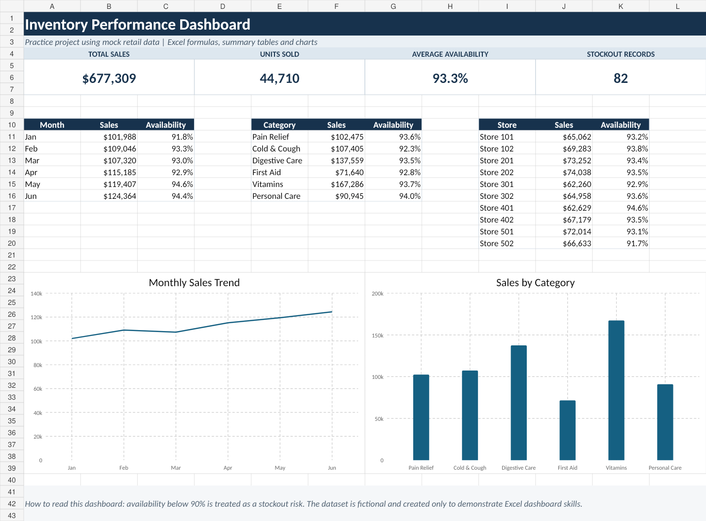

Purpose
Create a simple monthly view of sales, units, product availability and stockout risk across stores and categories.
How it works
- Sales Amount is calculated from Units Sold × Average Unit Price.
- Availability is calculated from In-Stock SKUs ÷ Planned SKUs.
- Records below 90% availability are flagged as stockout risk.
- Summary tables use SUMIFS, AVERAGEIFS and COUNTIF formulas.
What is included
The workbook includes a dashboard, detailed mock data and a short data dictionary. It is intentionally uncomplicated so the calculations can be reviewed easily.
Practice sample: All store and product data in this workbook is fictional.